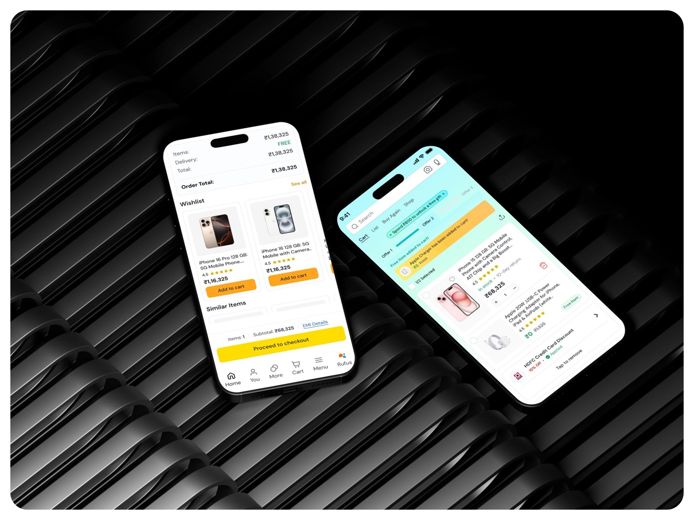
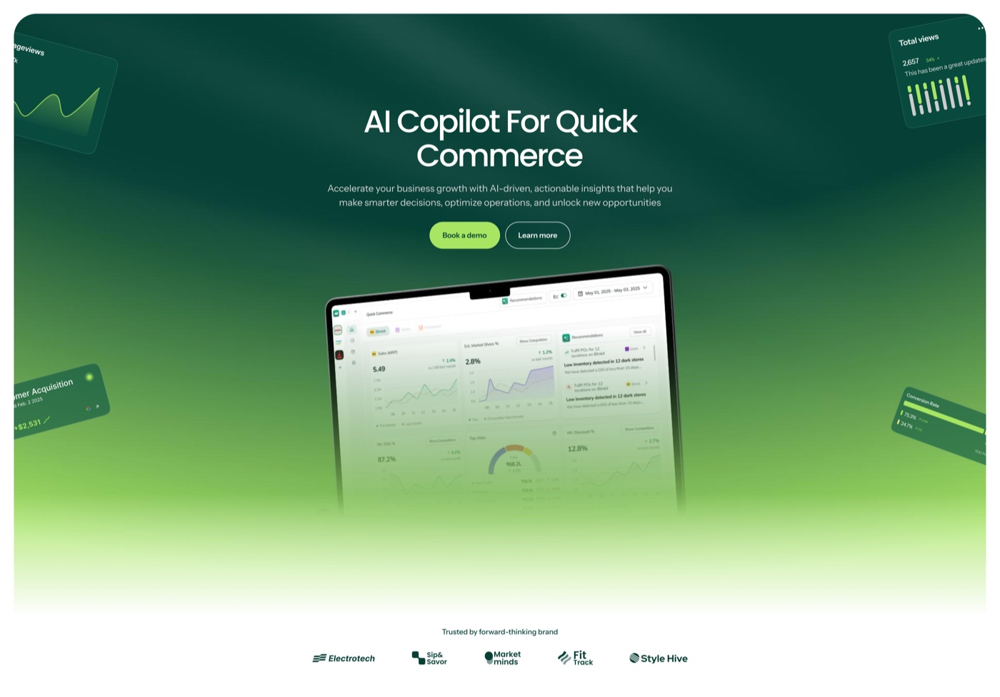
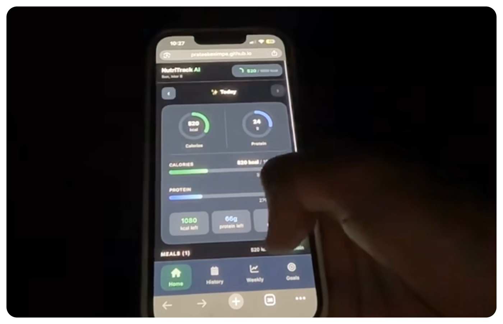
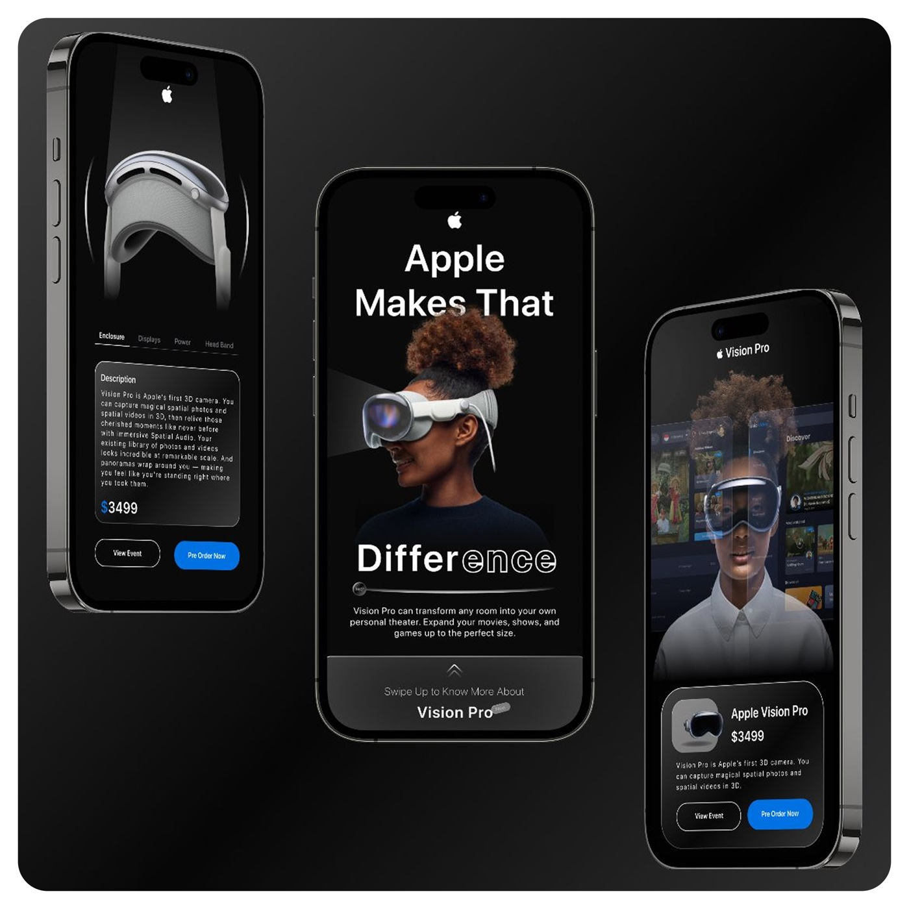
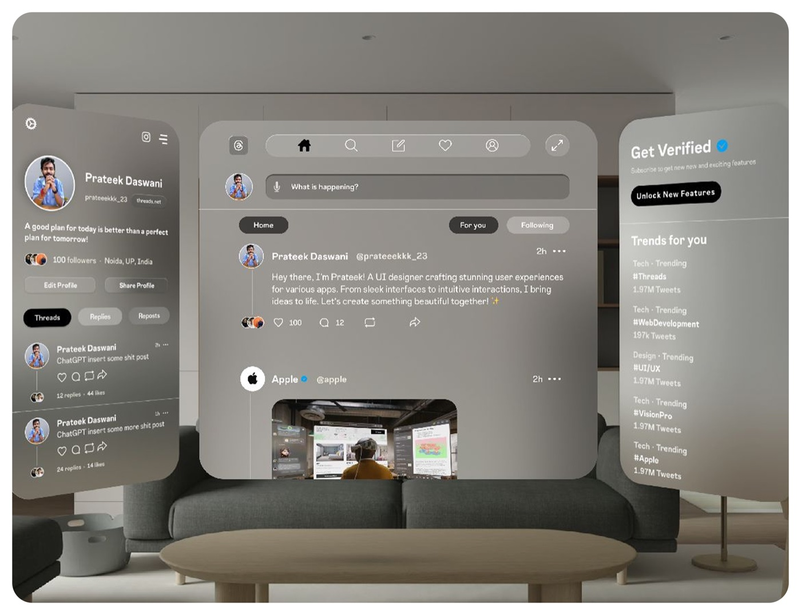

Reimbursements, in half the time.
A multi-claim mobile flow that turned a one-at-a-time form into a real Sunday-evening session.
~50% faster bulk claim submissions
Read case study ↗Three years of asking "but why?" before opening Figma. I work at the intersection of product thinking and interaction craft — which is a fancy way of saying I care about the words too.
A multi-claim mobile flow that turned a one-at-a-time form into a real Sunday-evening session.
~50% faster bulk claim submissions
Read case study ↗
A unified overview for finance teams that retired the side-spreadsheet.
~70% daily adoption · ₹50Cr+ visible
Read case study ↗
A personal exploration — tokens, components, foundations-up.
9 foundations · accessibility-first
Read case study ↗
A side project for people who want to start, not study. Stripped the jargon, surfaced the right next decision, and made the chart less of a Rorschach test.
Side project · first-timer onboarding
View project ↗I started in product design the way most people start in product design — making landing pages for friends and slowly realising the landing page wasn't the problem. Six years later I'm still figuring out the same thing, just at higher resolution.
I work best on messy, end-to-end product surfaces where the question isn't "what should this button look like" but "should this button exist at all." Fintech, internal tools, anything with a workflow that someone has been quietly tolerating for too long.
Outside of work I write a little, run a lot less than I should, and maintain a healthy relationship with my Notes app. I'm available for full-time roles and the occasional thoughtful side project.

B2B cross-border payments.

B2B fintech — accounts payable for finance teams.

Design agency — variety, velocity, real shipping.
Five small AI experiments. Some worked. Some built character. Scroll to drop them onto the board — then drag them around if you must.

A faster, calmer mobile checkout — fewer steps, friendlier copy.

An AI assistant that surfaces the metric you actually needed.

Logs your meal from a photo. No judgement, just numbers.

A spatial UI study — what feels native when the room is your canvas.

Reading X in three planes instead of one infinite scroll.
Prateek and I worked together at Pazy, where he was a product designer on the team. He owned his work end-to-end — from understanding the problem to shipping the solution — and he's good at simplifying complex flows, thinking through edge cases, and keeping the experience working for actual users. Easy to collaborate with, always open to feedback, and someone you can count on to deliver high-quality work.
Working alongside Prateek at Pazy, what struck me was how naturally he questioned the brief. He'd ask why a flow existed before redrawing it — and that habit kept us from designing prettier versions of the wrong thing. Generous with feedback, decisive when it mattered, and consistent on delivery. The kind of teammate who pushes the work without making it about himself.
I worked with Prateek at Mongoosh, where he was juggling four client projects across very different industries. The thing that stood out — even early in his career — was how seriously he took the fundamentals. Hierarchy, alignment, copy, edge cases. Nothing got hand-waved. He'd switch from a fintech dashboard to a beauty brand site without losing the rigor either of them deserved.
Building the transaction monitoring system with Prateek was the cleanest design handoff I've had. Every state, every edge case, every empty / loading / error variation — already thought through before the file got to me. We argued about a couple of interaction details and he came back with three options, not one defended position. That made the work go faster, not slower.
Most designers ship the brief. Prateek pushes back on it first. On the reconciliation dashboard he reframed the actual problem we were solving — and the version we shipped was significantly better than what I'd asked for. He thinks like a product person who happens to draw, which is the rarer kind of teammate to find.